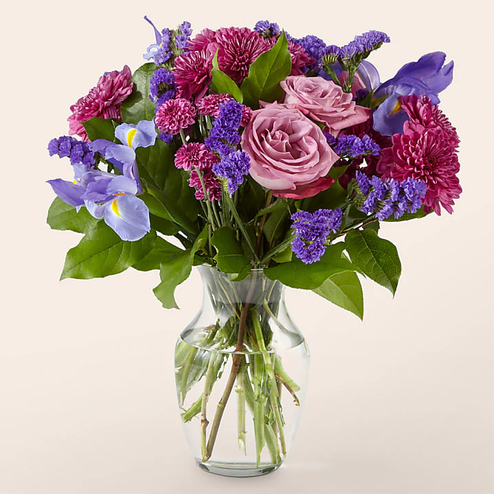
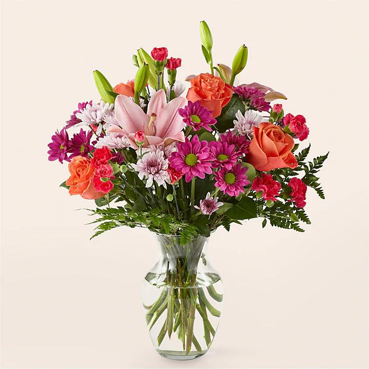
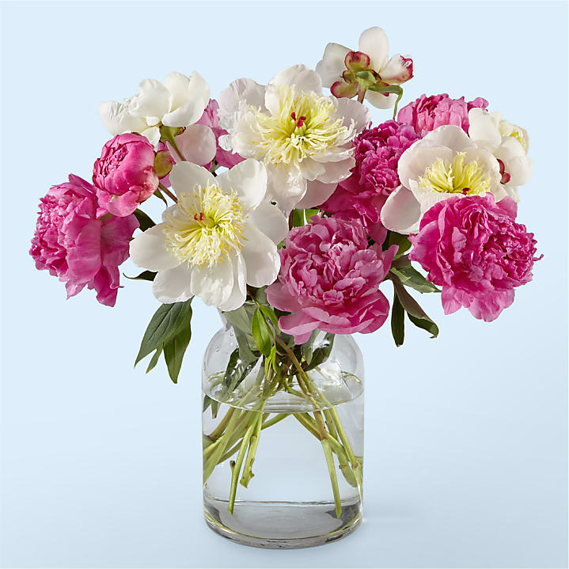

Congratulation Flowers
Giving someone flowers is the perfect way to say congratulations.
There are countless occasions that congratulations flowers would make the perfect gift for.
Whether it’s for a graduation, a new baby, or a housewarming gift, there’s no better way to say congratulations than with a bouquet of flowers or gift baskets from us.
A bouquet of congratulations flowers will make any occasion more meaningful, so surprise a loved on today.
Congratulations Flowers & Gifts FAQs
What types of flowers should I use in a congratulations bouquet?
Whether it's housewarming flowers or a bridal bouquet, many of life's special occasions are celebrated with flowers in hand. So you want to make sure you choose the right type of flowers in a congratulations bouquet. It's important to think of the person's specific taste. Do they prefer sunflowers or roses? What about daffodils? Certain flowers can symbolize congratulations. Irises symbolize accomplishment and admiration. Orchids represent pride and maturity. Daffodils signify new beginnings. So make sure you choose flowers that fit the occasion. We offer a wide range of congrats flowers options so you’re bound to find a bouquet that suits the recipient.
What are popular occasions to send someone a congratulations flower bouquet?
A congratulations flower bouquet is the perfect gift for a variety of occasions. Sending someone flowers is a great way to celebrate a life milestone, such as a marriage, a baby, or a new home. An arrangement of graduation flowers is a sweet way to say “Congrats! I’m so proud of you!” Flower bouquets also make for great retirement gifts. Any time a loved one accomplishes something significant in life, a congratulations flower arrangement will be the perfect gift.
What are additional gifts I can send with my congrats flowers?
For certain special occasions, just congratulations flowers might not be enough. But fortunately, we offer additional gifts you can send with the bouquet. For new parents, you can send new baby flowers in a gift set that comes with a blanket, teddy bear, and more. You can send a gift basket with delicious snacks for a loved one to enjoy. You can also send a balloon delivery with any flower arrangement to make the gift even more meaningful. Whatever you decide to pair it with, a congratulations flower delivery lets the recipient know you are super proud of them.
What are the most popular types of congratulation flowers?
There are myriad options when choosing the right congratulations bouquet to send. At Proflowers, you will find our collection of floral arrangements and accompanying gifts second to none.
Check out some of our best-selling bouquets for acknowledging a loved one’s achievements:
Blue & White Muscari Bulb Garden: a spring-fresh collection nestled in a charming basket
Best Dressed Bouquet: a mixture of colorful, long-lasting blooms that are shipped in season
Hello Sunshine Bouquet: a cheerful arrangement featuring bright yellow sunflowers, snapdragons, and lilies
Pink Calla Lily Plant: a low-maintenance calla lily that will live on for many months, delivered in a terracotta ceramic planter
Watercolor orchids: featuring lovely tones of blue and deep violate, watercolor orchids are a sophisticated choice for saying “Job Well Done!”
What color flowers are best for saying congratulations?
Both orange and yellow are cheerful colors that are suitable for congratulations flowers. There are no hard and fast rules for color choice, but – generally speaking – vibrant hues do well for most laudatory occasions. A mixed bouquet with white, purple, orange, and red flowers is a sure-fire way to show your admiration! Shop all flowers and order your congratulations bouquet for delivery today.
Same Day Congratulations Flower Delivery
When you purchase congratulations flowers from us, you can order online with confidence. Every floral gift is hand-arranged by an experienced florist, and delivered to your recipient’s doorstep in perfect condition. If you need something special last minute, not to worry! We offer same day flower delivery for many of our congratulations bouquets. Make sure your selection is eligible, and if placing your order on a weekday, be sure to do so by 2 pm. On weekends, your congratulations flower delivery order must be placed by 1 pm.

39000MMK

49000MMK

56000MMK

34000MMK

43000MMK

46000MMK